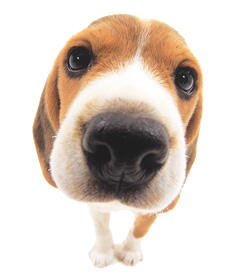
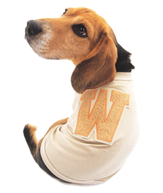

- 

- 
Info
De beagle is een hondenras. In Groot-Brittannië werd en wordt hij gebruikt voor de jacht op konijnen en hazen. Hierbij moet de hond het dier vangen en doodbijten. De hond is behoorlijk stevig gebouwd. De schofthoogte varieert van 33 tot 41 cm en het gewicht is ongeveer 15 kilo. De hond heeft een eigenzinnig karakter en gaat graag zijn eigen gang, maar dat weten veel baasjes in het ras juist erg te waarderen.
De hond is een tricolor, dit betekent dat hij in 3 kleuren voorkomt: zwart, wit en lichtbruin; de meeste beagles hebben alle drie de kleuren. Oudere beagles hebben natuurlijk ook grijze haren. De beharing kent twee variëteiten: de gladharige en de ruwharige. Bij de gladharige is het haar glad, heel dicht en niet te kort. Bij de ruwharige zeer dicht, stekelig en draadachtig. De vacht is goed bestand tegen weersinvloeden. Sinds 1950 is de ruwharige beagle uit de rasstandaard geschreven en komt officieel niet meer voor. Ook komen er twee kleuren voor in bijv. lime, tan, zwart, geel en rood.
De naam Beagle is afkomstig van het woord Beag, Beg of Beigh, wat "klein" betekent in het Keltisch, en werd voor het eerst gebruikt in de regeringstijd van koning Henry VII (tussen 1457 en 1509).